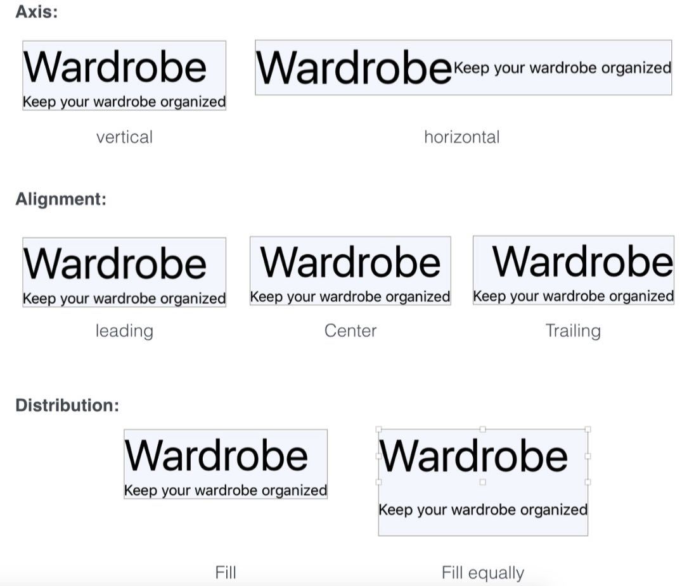
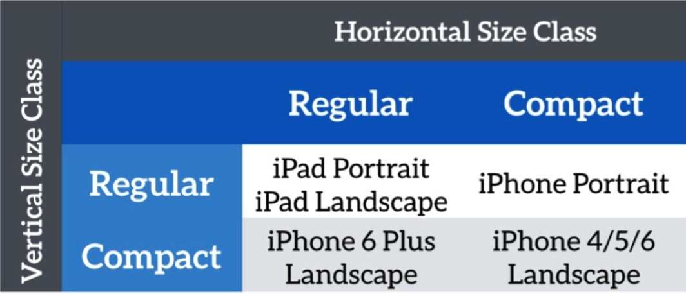

使用Swift进行iOS编程知识点总结第一篇，主要包括项目的基础搭建、Auto Layout、Alert的基本使用以及Table View的基本使用。
关联阅读：
Study iOS 9 Programming with Swift（1）
Study iOS 9 Programming with Swift（2）
Study iOS 9 Programming with Swift（3）
目录
- 目录
- 介绍
- 更新记录
- 创建项目
- 熟悉Xcode
- 实例：点击一个button，弹出一个alert
- Auto Layout
- Stack View
- Size Classes
- 实例：创建Table View
- 实例：隐藏某一个View中的Status Bar
介绍
- 该系列文章主要总结整理了自己在初学使用Swift语言进行iOS编程时的知识点，特别是一些常见功能的实例；
- 本文档总结的知识点出自Beginning iOS 9 Programming with Swift —— 国外作者写的一本针对于初学者的电子书，加之自己的理解和实践探索；
- 由于作为一名小白刚开始学习使用swift进行编程，所以总结的知识点可能有不准确或者错误的地方，故随着学习的深入和对知识点的回顾，可能会不定期的进行更正、增补；
- 所有的描述以自己能够理解为准则，但可能表述不够严谨或者完整；
- 为保证原汁原味，一些在开发过程中用到的术语，没有进行翻译。
更新记录
- 2016/08/11 第一次发布
创建项目
- Organization Identifier是唯一的，命名方式采用reverse domain name service (or reverse-DNS) notation，如com.chuxiangyuan。加上Product Name，两者组合成一起为独一无二的Bundle ID，如com.chuxiangyuan.myproduct。
- Use Core Data：Core Data简单理解为Apple开发包中自带的在本地存储数据的数据库。
熟悉Xcode
- 最左侧的列有文件树一栏称为Project Navigator，展示了一个项目的所有文件，中间是编辑区，右侧是选中元素对应的工具区，在storyboard中未选中任何元素时，可以看到Object library，展示了一些内置的元素。底部是Debug相关区域。
- Swift扩展名的文件是项目的主要代码，一般是**controller.swift，表示是某一个controller。AppDelegate.swift文件主要用来控制一些全局的设置。
- Main.storyboard用于存储App的主路径上的user interface，其中包括Document Outline View、Interface Builder editor。
- Assets.xcassets用于存储App中用到所有资源文件，如图片。
- Info.plist用于存储App的一些初始化设置项。
实例：点击一个button，弹出一个alert
- 思路：创建一个button的点击函数→定义点击后Alert显示消息的title、message、style→定义Alert的button的title、style、handler→展示Alert
- 代码片段：
//需要import UIKit
@IBAction func showMessage(sender: UIButton) {
//创建Alert的Title和Message，可以选择Alert或者ActionSheet显示样式
let alertController = UIAlertController(title: "Title", message: "Message", preferredStyle: UIAlertControllerStyle.Alert)
//给Alert添加动作、点击后的功能，样式可选择Default（文字为蓝色）、Cancel（文字为蓝色加粗）、Destructive（文字为红色）
alertController.addAction(UIAlertAction(title: "Button Title", style: UIAlertActionStyle.Default, handler: nil))
alertController.addAction(UIAlertAction(title: "Button2 Title", style: UIAlertActionStyle.Destructive, handler: nil))
alertController.addAction(UIAlertAction(title: "Button3 Title", style: UIAlertActionStyle.Cancel, handler: nil))
//展示Alert，可选有过渡动画或没有，可在展示后添加动作
self.presentViewController(alertController, animated: true, completion: nil)
}
Auto Layout
Auto layout bar
- Align:创建一些与对齐有关的constraints；
- Pin:创建一些与距离有关的constraints；
- Issues:自动化解决一些constraints相关问题；
- Stack:把几个view变成一个stack view，可以理解为组合起来，以方便对整组定义constraints。
Control-drag
- 在具体的view上按住control键然后拖拽到相关view，松开鼠标后选择添加constraints。小技巧：在选择时按住shift键，可以同时添加多个constraints。
在具体constraints旁边出现黄色或红色标记，表示constraints存在一些问题。可以点击标记并update frames。只有一个问题时可能好使，多个问题的时候一般不好使。
小技巧：选择assistant pop-up menu→Preview→按住option键点击storyboard，可以在新窗口中预览不同机型的效果，可调整屏幕方向。（constraints复杂了之后，这个方法也不好使了）
Stack View
- Stack View插入的两种方式：1.从Object Library中拖到storyboard中，再把要组合的view拖进去；2.选中要组合的view后，使用Auto Layout bar中的Stack选项。
- Stack View的两种基本形式：Horizontal（各view在其中水平排列）、Vertical（各view在其中竖直排列）
- Stack View的几个可配置项：1.Alignment：设置Stack View中的Views是左对齐、居中还是右对齐；2.Distribution：设置Stack View中的Views高度或者宽度是各自适应还是相等；3.Spaceing：设置Stack View中的Views之间的间距。具体可参见下图。 
Size Classes
- 从iOS8开始，开启Size Classes后，可以通过一个storyboard适配不同尺寸、不同屏幕方向的屏幕，甚至是iPhone和iPad，即响应式布局Adaptive Layout。
- Size Classes针对于横屏和竖屏定义了两种类型：Regular-空间大，Compact-空间小，这样排列组合后就会有四种类型。这四种类型分别代表了iPhone或iPad设备的不同屏幕方向，具体见下图。这样在针对View进行定义和constraints进行定义时就可以对于不同设备、不同屏幕方向采取不同的方案。具体方法是在这些设置项前面会有一个加号，点击后选择对应Size Classes并进行配置。 
实例：创建Table View
- 拖拽一个Table View到storyboard，然后初始配置其Cell（Table View中的每一行）的Style为Basic（系统内置类型），定义其Identifier为Cell，并添加必要的constraints；
- 对于class viewcontroller需要引入两个protocols：UITableViewDataSource和UITableViewDelegate，前者可以告知TableView要展示的数据是啥，要展示多少个等等，后者可以告诉TableView每一个展示的数据长啥样，比如行高是多少。
- 引入两个protocols后，要在storyboard中，将其与table view连接起来，具体操作是control-drag从table view到View Controller，并选中datasource和delegate。
- Coding：
- 思路：声明要展示的数据变量并赋值→告知table view有几个cell→在每个cell中显示具体的值。
- 代码片段：
// 声明tableview中展示的数据变量
var movieNames = ["小男孩", "火星救援", "老炮儿", "心迷宫", "房间", "十二公民", "独立日", "寒战2","完美陌生人", "大鱼海棠", "熔炉", "头脑特工队", "破风", "捉妖记", "歌曲改变人生", "速度与激情5", "肖申克的救赎", "机器人总动员", "盗梦空间", "忠犬八公的故事"]
// 告知tableview中有几个cell
func tableView(tableView: UITableView, numberOfRowsInSection section: Int) -> Int {
// 根据数组的数量返回table view中cell的数量
return movieNames.count
}
// 在每个cell中显示具体的内容,这个方法会在table view每个row要展示的时候被调起
func tableView(tableView: UITableView, cellForRowAtIndexPath indexPath: NSIndexPath) -> UITableViewCell {
// 为节省资源，使每个cell可以重复利用
let cellIdentifier = "Cell"
let cell = tableView.dequeueReusableCellWithIdentifier(cellIdentifier, forIndexPath: indexPath)
// 定义cell要显示的内容
cell.textLabel?.text = movieNames[indexPath.row]
cell.imageView?.image = UIImage(named: "房间")
return cell
}
实例：隐藏某一个View中的Status Bar
- 代码片段：
// 在该View中隐藏Status Bar
override func prefersStatusBarHidden() -> Bool {
return true
}